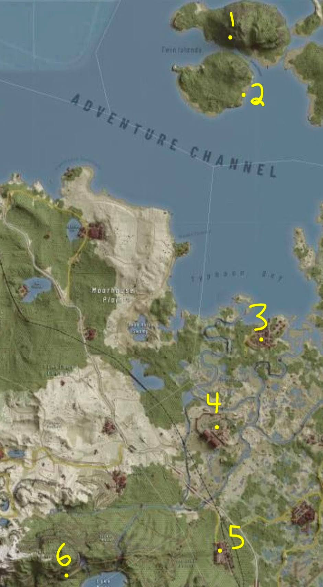
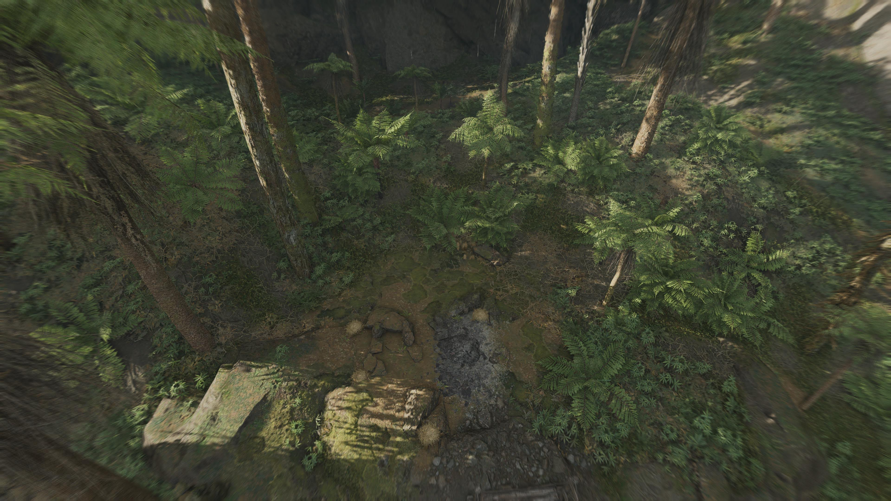
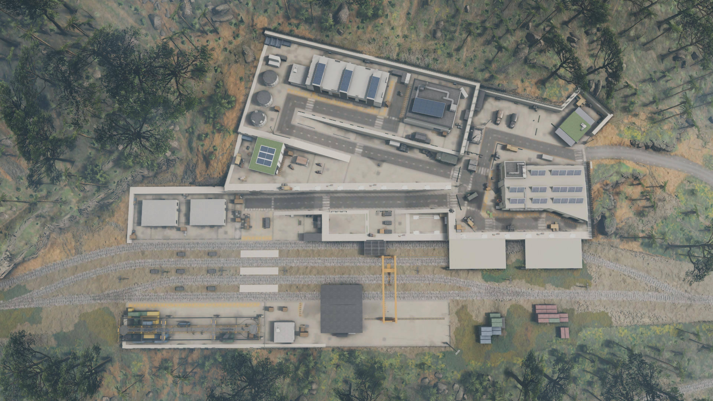

Operation Silver Scythe
SITREP
During Operation Silver Scythe, our unit is tasked with a critical two-part mission:
- Assault and neutralize an enemy black site and its reinforcement logistics hub.
- Conduct a rescue of Bandit 3, a friendly indigenous recon element captured near the Anti-Aircraft Ruins after their position was overrun.
At 1834 hours, during ingress, our MH-6 Little Bird came under fire from an enemy SAM battery. A catastrophic failure in the onboard countermeasures prevented flare deployment. As a last resort, the team was forced to bail out over hostile terrain, equipped only with their parachute, kit, and sidearm.
We are now deep behind enemy lines, cut off from command and outnumbered. The mission has not changed: rescue friendly forces and destroy enemy assets. Failure to act will cost allied forces countless lives and further strengthen enemy positions along the contested FB/SC border region.
MISSION PHASES
Twin Islands Bivouac
Start at Twin Islands Bivouac (roleplayed as the crash site where we just regrouped, everyone is alive but had their bell rung. No major injuries. Set the time to something around 1900 hours.)
Resupply and Scavenge
- - Sweep the southern island for supplies, weaponry, and usable items.
- - Locate a boat and cross mainland to assault anti-aircraft ruins.
Rescue Bandit 3
- - Assault the Anti-Aircraft Ruins and liberate captured friendly personnel.
- - Conduct site exploitation.
Infiltrate Airship Air Station
- - Investigate and infiltrate the Airship Air Station (enemy black site).
- - Gather intelligence, demolish munitions depots, and destroy all weapon caches in the building.
Seize Shipping Center
Seize the Shipping Center to cut off enemy reinforcements to the eastern border. Sanitize site.
Return to Base
Return to Erewhon HQ for debrief. Exfil via the designated extraction point once all mission objectives are confirmed complete.

Survival Parameters to Apply
Loadout Conditions:
- Start with your operator uniform and SIDEARM ONLY.
- No backpack, no primary weapon, and zero tactical items (all the “items on the wheel” such as Flash, Frag, Binos, etc.) since the team was forced to jump without full gear due to the aircraft emergency.
Field Survival:
- Operate as you would in a real combat survival scenario. Scavenge gear from downed hostiles. "Rebuild as you go".
- Roleplay picking up water, rations, navigation maps, binoculars and other field items.
- Any weapons recovered from enemy forces are considered basic-line: IRON SIGHTS ONLY (remove optics to maintain scenario realism just as in real life many militia and local indig rely on unmodded weapons which is the survival setting intended here.)
Communications:
- All radios lost on bailout so maintain line-of-sight communication ONLY, this makes us operate as a tight knit cohesive fireteam.
Mobility:
- No helicopters, AO remains hot with active SAM coverage. This is a boots-on-ground survival op (the roleplay is that anything getting off the ground would be shot by AA, ground vehicules and boats are of course usable.)
Operational Intent
Survive. Adapt. Complete the mission. Use stealth, precision, and violence of action when required. Improvise with whatever resources you can salvage. Every encounter is a chance to rebuild capability, use it.